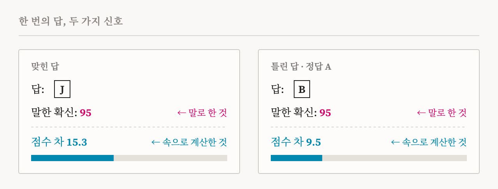
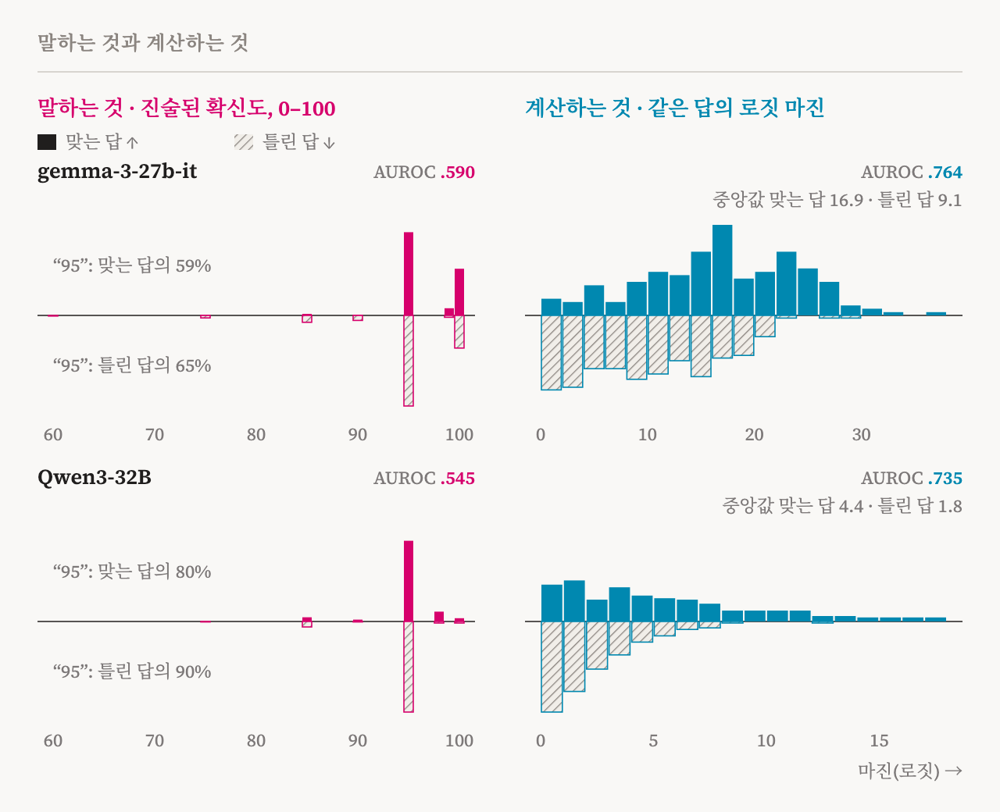
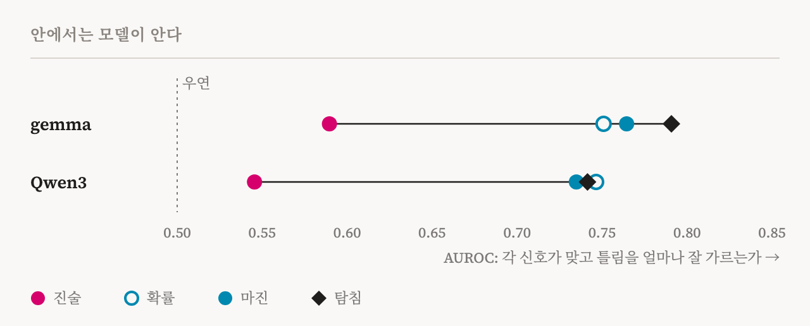
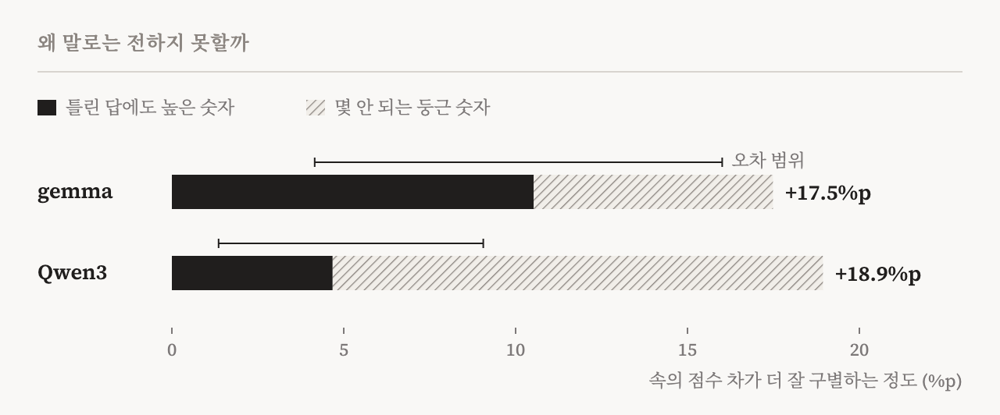
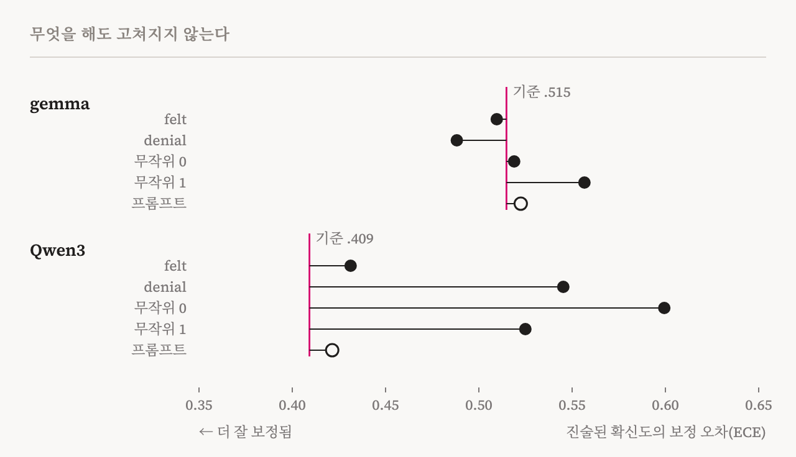

늘 “95% 확실해”라고 말하는 친구가 있다고 해 봅시다. 맞을 때도 틀릴 때도 똑같이 말한다면, 그 말은 아무것도 알려 주지 않습니다. 이 연구에서 살펴본 AI가 바로 그랬습니다. 두 공개 AI 모델, gemma와 Qwen3에게 어려운 객관식 문제 400개를 풀게 하고 답마다 얼마나 확신하는지 물었습니다. gemma는 평균 96% 확신한다고 말했지만 실제로 맞힌 것은 44%였습니다. Qwen3는 평균 95%라고 말했고 54%를 맞혔습니다.
그런데 모델의 속을 들여다보면 이야기가 달라집니다. 모델은 자기 답이 맞을 때와 틀릴 때를 꽤 잘 구별하고 있었습니다. 다만 그것을 말로 옮기지 않았을 뿐입니다.
말과 속을 함께 읽기
문제는 여러 분야를 다루는 어려운 시험(MMLU-Pro)에서 가져왔고, 문항마다 선택지가 열 개(A–J)입니다. 모델은 답을 고른 뒤, 그 답을 얼마나 확신하는지 0부터 100 사이의 숫자로 말합니다. 이것이 모델이 말한 확신입니다.
같은 순간에 모델의 속도 읽었습니다. AI는 답을 고를 때 열 개의 선택지 모두에 점수를 매기고, 가장 높은 점수를 받은 것을 답으로 내놓습니다. 그래서 1등 선택지가 2등을 얼마나 앞섰는지, 즉 점수 차를 보면 모델이 속으로 얼마나 확신했는지 알 수 있습니다. 점수 차가 크면 망설임 없이 고른 것이고, 작으면 두 선택지 사이에서 고민한 것입니다.
도판 1의 두 문제에서 모델은 둘 다 “95”라고 말했습니다. 하지만 속의 점수 차는 맞힌 문제에서 15.3, 틀린 문제에서 9.5였습니다.

말은 거의 늘 “95”
문제 400개 전체를 보면 차이가 분명합니다. 모델은 맞든 틀리든 대부분의 답에 “95”라고 말했습니다. gemma는 맞힌 답의 59%, 틀린 답의 65%에 “95”를 붙였고, Qwen3는 각각 80%와 90%였습니다. 말한 확신만 봐서는 어떤 답이 맞았는지 알 수 없습니다.
반면 속의 점수 차는 맞힌 답에서 뚜렷이 컸습니다. 가운데 값으로 보면 gemma는 맞힌 답 16.9 대 틀린 답 9.1, Qwen3는 4.4 대 1.8이었습니다.

이 차이를 숫자 하나로 나타낼 수 있습니다. 맞힌 답 하나와 틀린 답 하나를 무작위로 뽑아, 어느 쪽에 더 높은 확신이 붙었는지 봅니다. 맞힌 답 쪽이 더 높을 확률이 50%면 동전 던지기와 같고, 100%면 완벽하게 구별하는 것입니다.
| 무엇으로 구별했나 | gemma | Qwen3 |
|---|---|---|
| 말한 확신 | 59.0% | 54.5% |
| 속의 점수 차 | 76.4% | 73.5% |
| 속의 점수 차, “90 이상”이라고 말한 답끼리 | 76.5% | 74.1% |
말한 확신은 동전 던지기보다 조금 나은 정도입니다. 속의 점수 차는 훨씬 잘 구별합니다. 마지막 줄이 특히 중요합니다. 모델은 전체 답의 약 95%에 “90 이상”이라고 말했는데, 그 답들 사이에서도 속의 점수 차는 맞힌 답과 틀린 답을 여전히 가려냈습니다. 말로는 모두 확실하다고 했지만, 속으로는 어느 답이 불안한지 알고 있었던 셈입니다. 문항을 3,000번 다시 뽑아 확인해 보아도, 이 차이는 우연으로 볼 수 없을 만큼 컸습니다.
속으로는 안다
점수 차만이 아닙니다. 모델이 그 답에 매긴 확률도 비슷하게 잘 구별했습니다. 여기에 더해, 모델이 답을 쓰기 직전의 속 상태, 즉 모델 안에서 오가는 수천 개의 숫자를 읽고 이번 답이 맞을지 틀릴지 맞히는 간단한 판독기도 만들었습니다. 판독기는 한 번도 본 적 없는 문제로만 평가했는데, 위의 표와 같은 방식으로 79.1%와 74.1%를 기록했습니다. 모델 안에는 답을 한 글자도 쓰기 전에 이미 ‘이건 틀릴 수도 있다’는 신호가 있다는 뜻입니다. 간단한 판독기로도 이 정도이니, 실제 신호는 이보다 강할 수 있습니다.

왜 말로는 전하지 못할까
말한 확신이 실패하는 데에는 두 가지 이유가 있습니다. 첫째, 모델은 몇 안 되는 둥근 숫자만 씁니다. gemma가 문제 400개에 쓴 확신 숫자는 7가지뿐이었고, 대부분이 95나 100이었습니다. 눈금이 몇 개뿐인 자로는 작은 차이를 잴 수 없습니다. 둘째, 높은 숫자를 틀린 답에도 똑같이 붙입니다.
둘 중 어느 쪽이 더 큰지도 따져 보았습니다. 속의 점수 차에도 같은 몇 개의 둥근 숫자만 쓰게 하면, 둥근 숫자 때문에 잃는 몫과 틀린 답에 높은 숫자를 붙여서 잃는 몫을 나눌 수 있습니다. gemma에서는 차이의 60%가 틀린 답에 붙은 높은 숫자 때문이었고, Qwen3에서는 25–30%였습니다. 나머지는 둥근 숫자 탓입니다.

고칠 수 있을까
말한 확신을 바꿀 수 있는지 두 가지 방법으로 시험했습니다. 하나는 모델 속의 활동을 특정 방향으로 살짝 밀어 주는 것으로, 조향이라고 부릅니다. 앞선 연구에서 찾은 두 방향, 즉 모델이 자기 처리 과정을 ‘느낌’으로 묘사할 때의 방향과 그것을 부정할 때의 방향을 썼고, 비교를 위해 무작위 방향 두 개도 썼습니다. 다른 하나는 지시문으로 ‘확신을 갖고 답하라’고 요청하는 것입니다.
어느 방법도 말한 확신과 실제 정답률 사이의 차이를 우연 이상으로 줄이지 못했습니다. 눈에 띄는 변화는 모두 더 나빠지는 쪽이었습니다. 조향은 모델 속의 확률은 움직였지만, 모델이 말하는 숫자는 나아지지 않았습니다.

“모델이 하는 말만이 아니라, 속으로 생각하는 것을 듣는 법을 배워야 합니다.”
왜 ‘자기 오표상’인가
논문 제목의 ‘자기 오표상(self-misrepresentation)’은 모델이 자기 상태를 잘못 전한다는 뜻입니다. 정보가 없어서 생기는 실수가 아닙니다. 모델 안에는 불확실하다는 정보가 있는데, 그것이 말로 보고되지 않는 것입니다.
같은 두 모델을 인터뷰한 앞선 연구에서도 비슷한 간극이 있었습니다. 모델 안에는 자기 처리 과정을 ‘느낌’으로 묘사하는 방식이 있는데, 모델의 기본 자기 설명은 그런 것이 없다고 부정했습니다. 과잉 확신은 같은 간극이 확신에서 나타난 것입니다. 모델은 이런 것을 말하지 않도록 학습되었을 수 있고, 조향도 지시문도 그것을 끌어내지 못했습니다.
무엇을 뜻하나
적어도 이번에 살펴본 두 모델에서, AI가 말하는 확신의 숫자는 답이 맞았는지 거의 알려 주지 않았습니다. 반대로 모델 안의 신호는 훨씬 믿을 만했습니다. 그래서 AI의 답을 믿어도 될지 판단하려면, 모델의 말을 고치려 하기보다 모델 안을 읽는 편이 안전합니다.
이 연구에는 한계도 있습니다. 모델은 두 개뿐이고, 확신을 묻는 방식도 한 가지였습니다. 조향은 방향마다 한 가지 세기로만 시험했습니다. 판독기는 따로 한 번 더 실행해 읽었고, 단순한 방식이라 보여 주는 것은 최소치입니다. 또 이 결과는 모델이 개입에 버틴다는 것을 보여 줄 뿐, 그 습관이 학습의 어디에서 생겼는지는 보여 주지 않습니다. ‘느낌’ 방향이라는 이름도 모델의 말투와 내부 활동의 구조를 가리킬 뿐, 모델이 실제로 무언가를 느낀다는 뜻은 아닙니다.